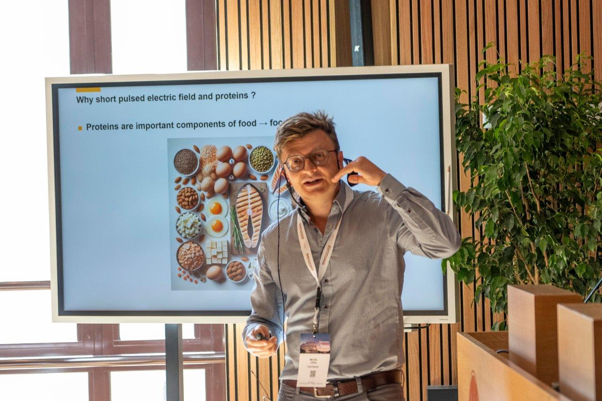

Senior Scientist · Team Leader
Author & Speaker
Founder · Biophotoniq
IEEE & Optica Senior Member
Michal Cifra, Ph.D.
The electromagnetic
physics of life.
I measure and model how living matter generates and responds to electromagnetic fields — from the ultra-weak light cells emit, to the electrodynamics of microtubules and the effects of electric fields on proteins. I also build the software that lets a small lab run like a large one.

scroll